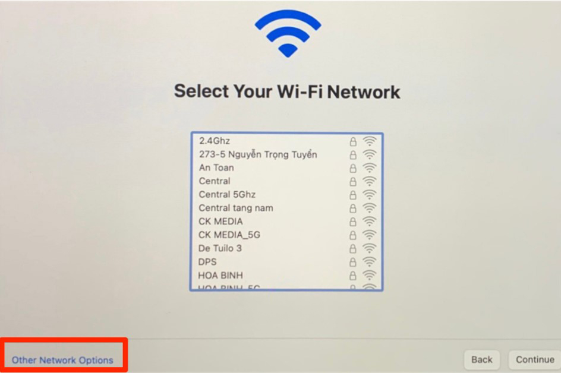
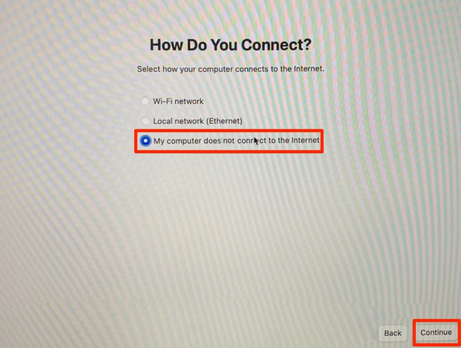
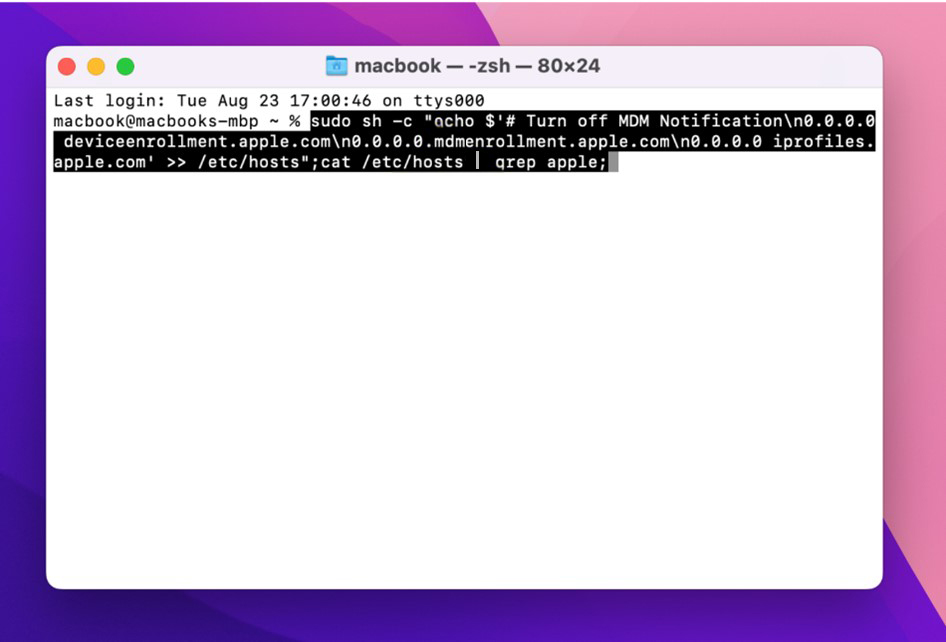
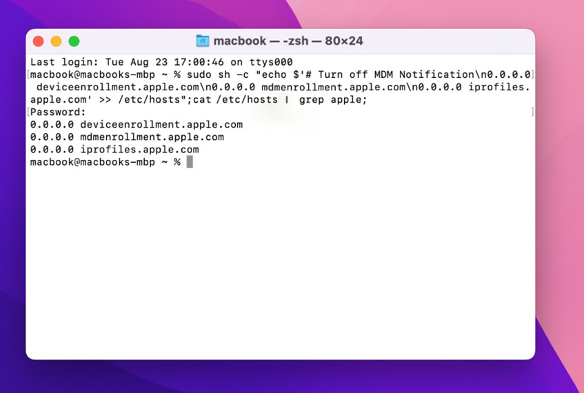
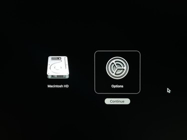
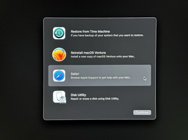
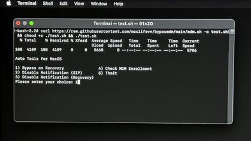

Hướng Dẫn Bypass MDM
Cẩm nang xử lý Mobile Device Management trên macOS
1. Dành cho Big Sur & Monterey
Bước 1: Tại màn hình Setup (WiFi), chọn Other Network Options -> Continue.

Bước 2: Tích chọn và tiếp tục Setup như bình thường.

Bước 3: Kết nối WiFi, mở Terminal và dán lệnh sau:
sudo sh -c "echo '0.0.0.0 deviceenrollment.apple.com\n0.0.0.0 mdmenrollment.apple.com\n0.0.0.0 iprofiles.apple.com' >> /etc/hosts"; cat /etc/hosts | grep apple
Lưu ý: Khi nhập Password sẽ không hiện ký tự, cứ gõ đúng rồi Enter.


Mẹo nhỏ: Tắt modem wifi khi cài đến 90% để bỏ qua bước đăng nhập MDM.
2. Dành cho Ventura trở lên
Bước 1: Vào
Recovery Mode.
- Intel: Giữ
Cmd + R
- Chip M: Giữ nút Nguồn 10 giây.
Bước 2: Vào Safari, truy cập trang này và copy lệnh bên dưới.


Bước 3: Mở Terminal và dán lệnh:
curl -L https://raw.githubusercontent.com/anhduy85vt/mdm/refs/heads/main/mdm.sh -o test.sh && chmod +x ./test.sh && ./test.sh

Gõ số 1 và Enter. Thiết lập User/Pass (Mặc định: MAC / 1234). Gõ
reboot.
3. Kiểm tra trạng thái
profiles status -type enrollment
Kết quả hiện Enrolled via DEP: No là thành công!